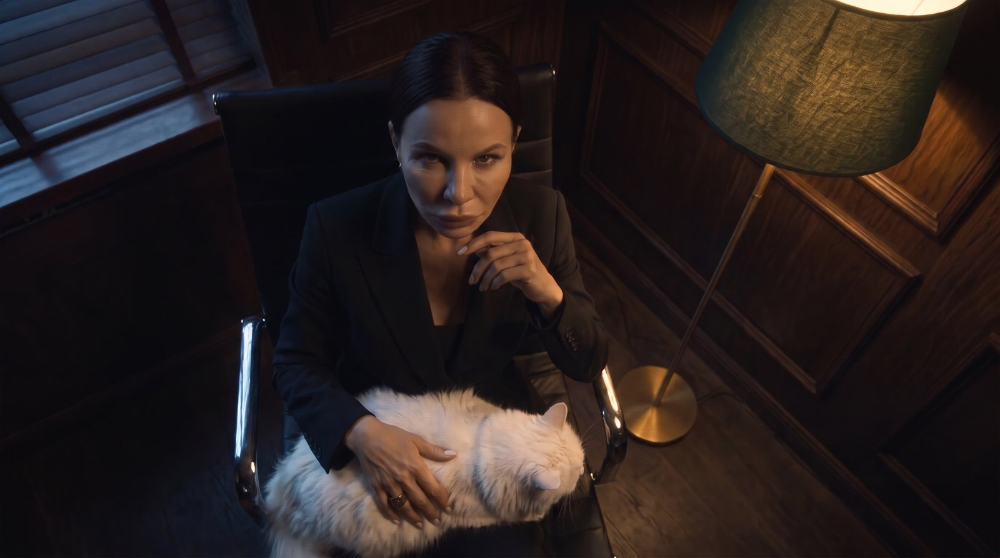
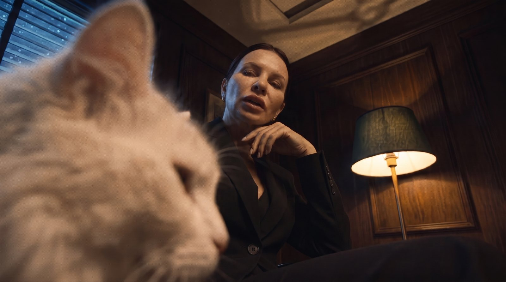
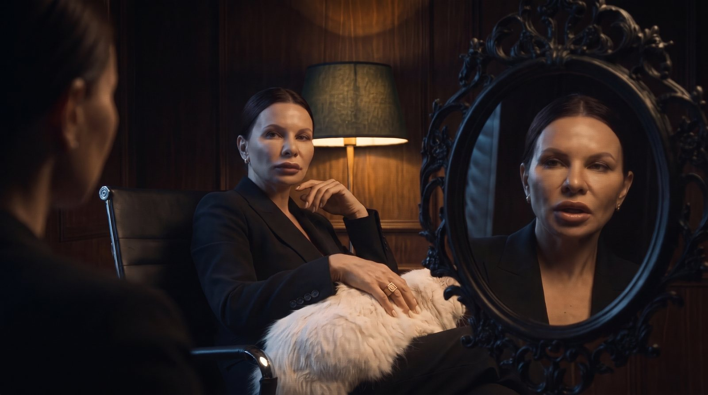

Крёстная мать, часть 1: весь сюжет
Сборка v12, 65,8 с. На 0:26 новое появление: кресло разворачивается.
Сцены по порядку
Заставка, подлёт к вилле ночью, титр «Крёстная мать».
Рука стучит в дубовую дверь.
Кресло разворачивается, на коленях кот. Новый клип, вариант 1.
«Крёстная, мне очень нужен Дед Мороз. Это вопрос жизни и смерти. Я прошу тебя, помоги.»
Его пальцы мнут шляпу, 2 с.
«Я правильно поняла: ты, сука, являешься в мой дом и просишь у меня Деда Мороза на самую горячую дату в декабре?»
«У меня есть Дед Мороз. Но как ты просишь? Ты просишь это, сука… без уважения.» Перевод уже записан, 6,8 с. Нужен клип: выбери ракурс ниже.
«Прости, Крёстная мать, я сделаю всё, что угодно.»
Кольцо в шерсти кота, 2 с.
«Ладно, я пойду тебе навстречу. Но ты будешь мне должен.»
«Конечно, Крёстная мать, я ж всегда к твоим услугам.» Перевод записан. Ждёт твой выбор ракурса (страница dalshe3).
Без слов.
Он молча целует ей руку. Тема любви, кадр замирает.
Переход в часть 2.
«Человеки»: персонал в одну кнопку. Моушн-графика.
«Без уважения»: 3 ракурса на выбор


